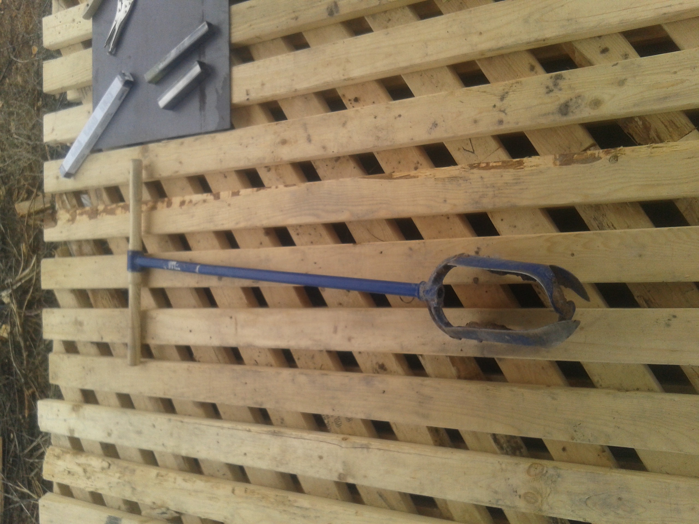
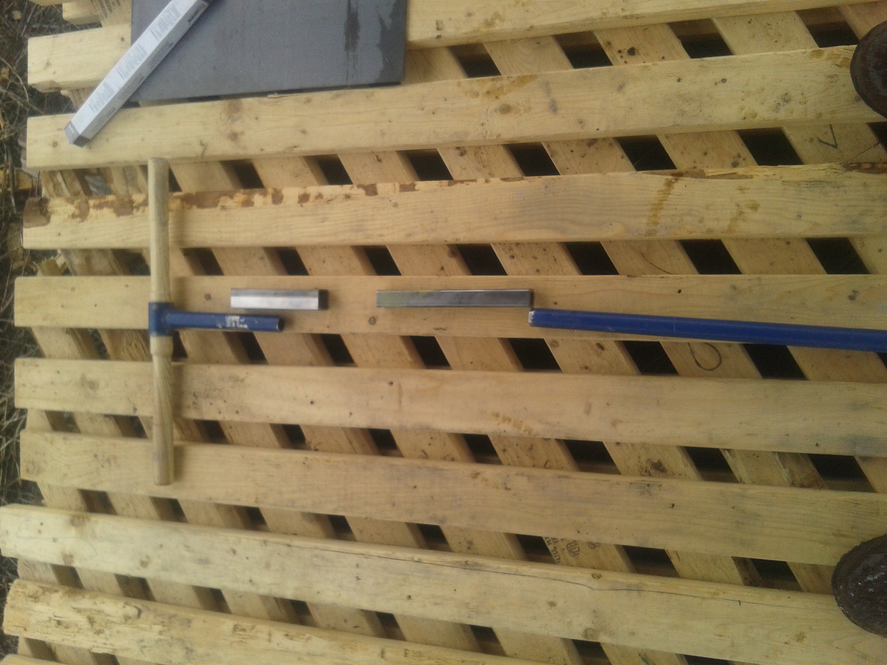
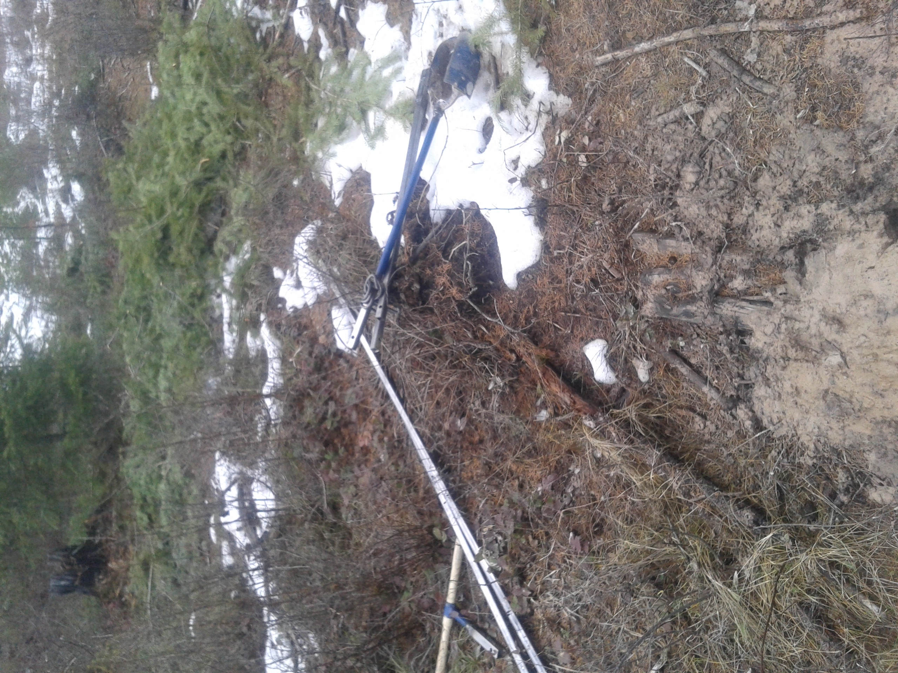

This page is under construction. Will add a video and more pictures soon. This is an ongoing project that was started in February 2016.
We have successfuly used this equipment to dig 3 wells that reached the shallow water table (and 5+ more that were dry). Two of those wells have pitcher pumps installed; one of which is modified for cold weather use. The third well is currently neglected due to depth. Unfortunately none of these wells have a significat water output. I estimate our best well could yield a maximum of 50 gallons if one were to sit nearby and pump dry every 20-30min. I am experimenting with methods to improve the output.
One experiment is to dig additional holes in close proximity (~6inches) to the well. Those holes will be backfilled with gravel several feet high (however high the expose water table is). And backfilled with clay to the surface. Then a mud pump will be used to blow out the wall in between. By increasing the surface area of exposure to the water table I hypothesise that the well will replenish faster. One well has an additional hole dug near it. A few more will be dug before any conlusions are drawn. Winter has slowed the further labor.
Some books suggest that with higher use a well will develope veins underground that the water table regularly flows through into the bottom of the well. Due to low output, we don't put our wells to too much use. Maybe hooking up a scheduled electric pump could help develop the veins

Unmodified Auger
The original well drilling bit came from this Seymour auger.This is how the auger looks before cutting and welding in the joints.
This style of drilling bit did reaonably well at digging up clay, silt and sand. But, it has a very small opening and would not pick up rocks any larger than a pebble. Additionally, the corkscrew style auger that we later used is slightly smaller diameter, and therfore we could no longer reinsert this one without reboaring the complete depth.

Cut and weld
The auger was cut tosepearate the handle from the drill bit. Lengths of square tubing will be attached between the handle and the bit so that the auger can drill fromgreater depths. The original tube between the handle and bit is just some threaded steel tube. Some people just thread in additional bits of steel tube. But, I have read accounts of most thread tube at this diameter being thin wall. At great lengths, they say the weight and leverage can break the pipe off at the threads.
The drill bit has a smaller square tubing that inserts into the larger square tubing attached to the handle. I welded the threaded joints so that they can no longer spin.

At the site
A poor picture of the well drilling equipment last year at the first drill site. At this site we hit rock at about 22 feet. This auger style was unable to break through. Many efforts using a rockbar were made. We needed an upgrade.